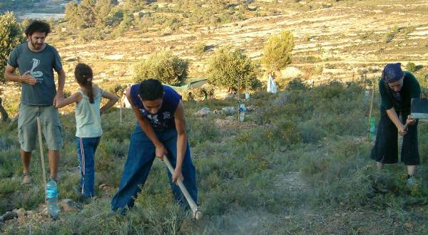

transforming CHECKPOINTS into MEETING-POINTS
| home |
| about |
| work |
| story |
| team |
| schedule |
| links |
| SPRINGS and TERRACES |
|
The valleys and hills between Jerusalem and Bethlehem have seen human settlements for thousands of years. Generations of farmers have been making use of the numerous springs flowing out of the aquifer onto the land surface. They have been digging tunnels and canals to redirect the water into their plots. They have also been collecting rocks to build terraces on the mountain slopes, so that the fertile earth would not wash away. Today, even though working on the land has become less and less common, due to modern economical and political priorities, still few people have remained to work on the land. Feeling a deep connection to the nature and the life force it bestowes, Palestinians like Abed Abd Raba and Fakhri Abu Abdallah continue to walk in the footsteps of their ancestors. On the other side of the border, young groups of Israelis are inspired to come and restore springs and rebuild ancient pools, to work with the earth in an environmentally friendly way, to grow organic vegetables and herbs and to buy fair trade produce from farmers. Bringing together the vision of social entrepreneur Avner Haramati with the joint work begun by the All Nations Café team, the Springs and Terraces project has been launched on June 21st 2007 with a working day on the land of Abed. In the following months we have worked both on Abed's land and Abu Abdallah's to help dig water conacthment cellars and canals, restore stone terraces, clear thornes and harvest olives. We have also had concentrated cleaning days, where many volunteers collected garbage left around Ein Haniya spring and inspired Palestinian onlookers to join and help, and receiving some support from the Israel Nature Authority. Contacts: Abed 052-2458216 Nimrod 050-2600590 |
MORE PROJECTS GATHERINGS on the ISR/PAL BORDER PLANTING a FUTURE HOLY LAND CARAVANS |